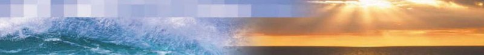
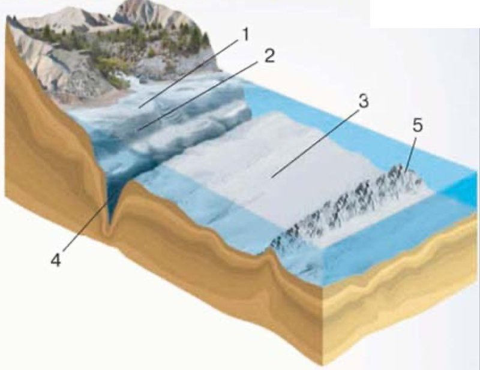

Мировой океан (2)
Амина, эта тема о суше, которая оказалась посреди воды, и о том, что дно Океана совсем не ровное.

Представь, что ты заходишь в море с песчаного пляжа. Сначала долго идёшь по мелкому: вода по колено, потом по пояс. Кажется, что так будет и дальше. И вдруг дно уходит вниз, и ты уже не достаёшь ногами.
Примерно так устроено и дно Мирового океана, только всё во много раз больше. От берега тянется широкая подводная «мель», потом идёт крутой спуск, а дальше — огромная равнина на глубине в несколько километров. И на этой равнине есть свои горы и свои узкие пропасти.
А ещё в Океане есть суша. Кусочек земли, вокруг которого вода со всех сторон, — это остров. Кусочек, который водой окружён только с трёх сторон, а четвёртой держится за материк, — полуостров.
Вот из чего состоит тема:
У каждого шага написано, на какой странице учебника искать. Внизу шага есть «Подробнее, как в учебнике»: там всё, что есть на этих страницах, ничего не пропущено. Сначала учи по коротким шагам, а перед уроком открой «подробнее».
Надпись вверху шага подскажет, откуда он: синяя — из учебника, золотая — задание учебника, оранжевая — сверх учебника (пересказ, словарик, игры, самопроверка). В «Содержании» шаги так же разбиты на группы.
Подробнее, как в учебнике · с. 104
- § 31 «Мировой океан (2)» начинается на с. 104. Вверху страницы — фотография моря: слева волна, справа закат над водой. Подписи к этой фотографии в учебнике нет.
- Под заголовком параграфа курсивом стоит строка подтем: «Что такое острова и полуострова. Как устроено дно Океана».
- Значит, в параграфе две подтемы, и каждая начинается своим вопросом-заголовком: «Что такое острова и полуострова?» (с. 104) и «Как устроено дно Океана?» (с. 104–105).
- Рисунок в параграфе один — рис. 73 на с. 105.
- В конце параграфа (с. 105) есть рубрика «Запомните:» и шесть вопросов и заданий тремя группами: «Это я знаю», «Это я могу», «Это мне интересно».
- Дат и ленты времени в этом параграфе нет: география — не история, тут запоминают не годы, а названия и цифры глубин.
Острова и архипелаги
Открой физическую карту. Рядом с берегами материков и прямо посреди Океана ты увидишь отдельные участки суши, со всех сторон окружённые водой. Это острова.
Иногда острова стоят не поодиночке, а целой группой. Группа островов называется архипелаг. Скажи это слово по слогам: ар-хи-пе-лаг.
Острова бывают разных размеров, но все они во много раз меньше материков. Самый крупный остров на Земле — Гренландия. Она лежит к северо-востоку от Северной Америки.
Другие крупные острова, которые называет учебник: Мадагаскар, Сахалин, Баффинова Земля, Новая Гвинея, Великобритания, Калимантан.
Как запомнить эти шесть названий
Найди каждый остров на карте и скажи вслух, у какого материка он лежит: Мадагаскар — у Африки, Сахалин — у нашего Дальнего Востока, Баффинова Земля — у Северной Америки, Новая Гвинея и Калимантан — рядом с Австралией и Азией, Великобритания — у Европы. Название запоминается вместе с местом, а не отдельно.
Подробнее, как в учебнике · с. 104
- Заголовок подтемы: «Что такое острова и полуострова?»
- На карте вблизи побережий материков и среди Океана вы увидите отдельные участки суши, со всех сторон окружённые водой, — острова. Встречаются и группы островов — архипелаги.
- Острова бывают разных размеров, но все они во много раз меньше материков.
- Самый крупный остров на Земле — Гренландия — расположен к северо-востоку от Северной Америки.
- Другие крупные острова — Мадагаскар, Сахалин, Баффинова Земля, Новая Гвинея, Великобритания, Калимантан.
- Все эти названия в учебнике выделены жирным шрифтом: именно их нужно нанести на контурную карту в задании 3 в конце параграфа.
Откуда берутся острова
Учебник делит острова по происхождению — то есть по тому, как они появились. Получается три группы.
Материковые
Земная кора двигалась, и от материка отделялись небольшие части — так возникали острова. Все крупные острова с прошлого шага — материковые. Учебник называет: Гренландия, Мадагаскар, Тасмания.
Вулканические
Образовались в результате подводных извержений вулканов: вулкан рос со дна, пока его вершина не поднялась над водой. Учебник называет: Гавайские, Курильские, Канарские.
Коралловые
Образовались из окаменевших остатков кораллов. Учебник называет: Мальдивские острова и острова Большого Барьерного рифа.
А кто такие кораллы?
Кораллы — это не камни и не растения, а крошечные морские животные. Они живут огромными колониями в тёплой воде и строят вокруг себя твёрдый известковый домик. Животное умирает, а домик остаётся. Таких домиков за тысячи лет накапливается столько, что из них вырастает целая каменная гряда, а над водой — остров.
Вулканические острова: Гавайские, Курильские, Канарские.
Коралловые острова: Мальдивские, острова Большого Барьерного рифа.
Материковые острова: Гренландия, Мадагаскар, Тасмания.
Подробнее, как в учебнике · с. 104
- Все перечисленные крупные острова (Гренландия, Мадагаскар, Сахалин, Баффинова Земля, Новая Гвинея, Великобритания, Калимантан) по происхождению материковые. Это значит, что в результате движений земной коры от материка отделялись небольшие части и возникали острова.
- Кроме того, существуют вулканические и коралловые острова. Первые образовались в результате подводных извержений вулканов, вторые — из окаменевших остатков кораллов, например Большой Барьерный риф.
- Врезка на полях с. 104, слева: «Вулканические острова: Гавайские, Курильские, Канарские. Коралловые острова: Мальдивские, острова Большого Барьерного рифа. Материковые острова: Гренландия, Мадагаскар, Тасмания».
- Тасмания в основном тексте параграфа не упоминается — она есть только во врезке.
Полуострова
Полуострова — это выступающие части суши, с трёх сторон окружённые водой. Четвёртой стороной полуостров держится за материк, поэтому он и «полу-остров»: как бы остров наполовину.
Самые большие полуострова на Земле: Аравийский, Скандинавский, Индостан, Индокитай, Лабрадор, Сомали.
В России самый крупный и самый северный полуостров — Таймыр, а самый южный — Крымский. Полуостров Камчатка находится на Дальнем Востоке, на побережье Тихого океана.
ОСТРОВА И ПОЛУОСТРОВА — ЭТО УЧАСТКИ СУШИ В ОКЕАНЕ.
В учебнике эта строчка написана большими буквами на розовой полосе. Такие полосы в «Полярной звезде» — самое главное в подтеме, их стоит запомнить дословно.
Каспийское море, у которого стоит Каспийск, на самом деле самое большое в мире озеро: с Мировым океаном оно не соединяется. Но острова и полуострова у него свои есть.
Напротив дельты Терека, на севере Дагестана, вытянулся Аграханский полуостров — узкая песчаная полоса длиной около 50 км. Её намыла река Терек. А неподалёку от него лежит остров Чечень — самый крупный остров у берегов Дагестана. Уровень Каспия сейчас понижается, и берега тут заметно меняются.
Подробнее, как в учебнике · с. 104
- Полуострова — это выступающие части суши, с трёх сторон окружённые водой.
- Самые большие полуострова на Земле — Аравийский, Скандинавский, Индостан, Индокитай, Лабрадор, Сомали.
- В России самый крупный и самый северный полуостров — Таймыр, а самый южный — Крымский.
- Полуостров Камчатка находится на Дальнем Востоке, на побережье Тихого океана.
- Розовая полоса большими буквами в конце подтемы: «ОСТРОВА И ПОЛУОСТРОВА — ЭТО УЧАСТКИ СУШИ В ОКЕАНЕ».
- Названия всех полуостровов в учебнике выделены жирным: их тоже нужно нанести на контурную карту в задании 3.
Дно Океана неровное
Вода Океана лежит в огромных углублениях земной коры — океанических котловинах. Если бы эти котловины были просто гигантскими ямами с ровным дном, то Мировой океан везде имел бы одинаковую глубину — 3750 м.
Но посмотри на физическую карту: океаны на ней закрашены разными оттенками голубого. Чем цвет насыщеннее, тем большую глубину он показывает. Значит, дно Океана неровное. Его рельеф такой же сложный, как рельеф суши: там есть и равнины, и горы, и впадины.

Шельф — подводная «мель»
Вдоль побережья материка тянется шельф. Его ещё называют материковой отмелью. Это мелководная окраина материков, глубины здесь обычно до 200 м.
Для Океана 200 метров — совсем немного, поэтому шельф лучше всего освоен человеком. Именно в шельфовых зонах ведётся основной лов рыбы и добывают огромное количество нефти.
Подробнее, как в учебнике · с. 104–105
- Заголовок подтемы: «Как устроено дно Океана?»
- Если бы океанические котловины в земной коре были просто гигантскими углублениями с ровным дном, Мировой океан имел бы одинаковую глубину — 3750 м.
- Однако на физической карте мы видим разные оттенки голубого цвета в океанах. Чем интенсивнее цвет, тем большую глубину он обозначает. Оказывается, дно Океана неровное. Его рельеф такой же сложный, как и рельеф суши (рис. 73).
- Вдоль побережья материка тянется шельф (его ещё называют материковой отмелью). Это мелководная окраина материков с глубинами обычно до 200 м.
- Для Океана такие глубины совсем небольшие, и шельф лучше всего освоен человеком. В шельфовых зонах ведётся основной лов рыбы и добывают огромное количество нефти.
- Рис. 73 на с. 105. Подпись: «Часть рельефа дна Океана: 1 — шельф; 2 — материковый склон; 3 — ложе Океана; 4 — глубоководный жёлоб; 5 — срединно-океанический хребет». На самом рисунке материковое подножие цифрой не отмечено, хотя в тексте оно есть.
- На рис. 73 глубоководный жёлоб (4) нарисован прямо у подножия крутого склона, недалеко от берега, а срединно-океанический хребет (5) — далеко в Океане, посреди ложа.
Подводная окраина материков
Шельф кончается — и начинается крутой материковый склон. Это тот самый обрыв, где дно резко уходит вниз. На глубине 3000—3500 м склон заканчивается материковым подножием.
Шельф, материковый склон и материковое подножие вместе составляют подводную окраину материков. Название честное: строение земной коры здесь такое же, как на материке. То есть это и правда край материка, просто залитый водой.
Почему это важно знать
Земная кора бывает двух видов: материковая (толстая) и океаническая (тонкая). Раз на подводной окраине кора материковая, значит, настоящий край материка проходит не по линии пляжа, а гораздо дальше — там, где кончается материковое подножие.
Подробнее, как в учебнике · с. 105
- Далее (за шельфом) начинается крутой материковый склон. На глубине 3000—3500 м он заканчивается материковым подножием.
- Шельф, материковый склон и материковое подножие вместе составляют подводную окраину материков.
- Строение земной коры здесь сходно с материковой.
- В учебнике слова «материковый склон», «материковое подножие» и «подводная окраина материков» выделены курсивом: это новые понятия параграфа.
Ложе Океана и подводные хребты
За подводной окраиной материков начинается ложе Океана — огромная по площади часть дна. Она тянется до глубины 6000 м. Слово «ложе» — от «лежать»: это как бы постель, на которой лежит вода Океана.
Рельеф ложа сглажен, но и здесь существуют поднятия и впадины, горные хребты и вулканы. Просто всё это ниже и спокойнее, чем на суше.
Хребты через весь Океан
Особое место занимают огромные по размерам срединно-океанические хребты. Они возвышаются над ложем на 3000—5000 м — это выше Эльбруса.
Самое удивительное: они существуют в Мировом океане как единая замкнутая система общей длиной около 60 тыс. км. То есть это не отдельные горы, а один гигантский шов, который тянется через все океаны и смыкается сам с собой.
Их вершины, поднимающиеся выше уровня Океана, образуют острова. Так появилась Исландия.
Длина экватора — около 40 тыс. км. Значит, срединно-океанические хребты могли бы полтора раза обогнуть всю Землю.
Подробнее, как в учебнике · с. 105
- До глубины 6000 м располагается огромное по площади ложе Океана.
- Рельеф ложа Океана сглажен, но и здесь существуют поднятия и впадины, горные хребты и вулканы.
- Особое место занимают огромные по размерам срединно-океанические хребты, возвышающиеся над ложем на 3000—5000 м.
- Они существуют в Мировом океане как единая замкнутая система общей длиной около 60 тыс. км.
- Их вершины, поднимающиеся выше уровня Океана, образуют острова (Исландия и др.).
- На рис. 73 срединно-океанический хребет — под цифрой 5, ложе Океана — под цифрой 3.
Глубоководные желоба и осадки
Глубоководные желоба — это узкие длинные впадины с крутыми склонами и глубиной более 6000 м. Представь очень длинную и очень узкую трещину в дне.
Расположены они у побережий материков либо вытянуты вдоль островных дуг — цепочек островов, изогнутых, как дуга. Курильские острова как раз такая дуга.
Один из таких желобов — Марианская впадина. Она находится в Тихом океане у Марианских островов, и её глубина — 10 971 м!
Эльбрус, самая высокая гора Кавказа и России, — 5642 м. Марианская впадина глубже, чем два Эльбруса, поставленных друг на друга.
Чем покрыто дно
Дно Океана покрыто в основном осадочными отложениями. Это то, что осело на дно и накопилось там за очень долгое время:
- частички разрушенных волнами берегов;
- то, что приносят в море реки (бо́льшая часть этого оседает на шельфе);
- остатки отмерших организмов;
- продукты извержения многочисленных подводных вулканов.
ОСНОВНЫЕ ФОРМЫ РЕЛЬЕФА ДНА МИРОВОГО ОКЕАНА: ПОДВОДНЫЕ ОКРАИНЫ МАТЕРИКОВ, ЛОЖЕ ОКЕАНА И СРЕДИННО-ОКЕАНИЧЕСКИЕ ХРЕБТЫ.
Это вторая розовая полоса параграфа. Обрати внимание: главных форм три, и желоба в этот список не входят — они часть рельефа, но не отдельная «основная форма».
Острова. Архипелаги. Полуострова. Рельеф дна Океана.
В «Полярной звезде» эта рубрика в синей рамке — список того, что нужно знать после параграфа. Проверь себя: можешь объяснить каждое из четырёх словосочетаний?
Подробнее, как в учебнике · с. 105
- Глубоководные желоба — это узкие длинные впадины с крутыми склонами и глубиной более 6000 м.
- Они расположены у побережий материков либо вытянуты вдоль островных дуг.
- Один из таких желобов — Марианская впадина — находится, как написано в учебнике, на востоке Тихого океана у Марианских островов и имеет глубину 10 971 м.
- Дно Океана покрыто в основном осадочными отложениями. Они образуются при разрушении берегов волнами или приносятся реками. Бо́льшая их часть осаждается на шельфе.
- Кроме того, на дне Океана накапливаются остатки отмерших организмов и продукты извержения многочисленных подводных вулканов.
- Розовая полоса большими буквами: «ОСНОВНЫЕ ФОРМЫ РЕЛЬЕФА ДНА МИРОВОГО ОКЕАНА: ПОДВОДНЫЕ ОКРАИНЫ МАТЕРИКОВ, ЛОЖЕ ОКЕАНА И СРЕДИННО-ОКЕАНИЧЕСКИЕ ХРЕБТЫ».
- Рубрика «Запомните:» в синей рамке: «Острова. Архипелаги. Полуострова. Рельеф дна Океана».
- На рис. 73 глубоководный жёлоб — под цифрой 4.
Словарик: суша в Океане
ИграНажми на карточку, и она перевернётся. Словарик из двух частей, открой все карточки.
Словарик: дно Океана
ИграВторая часть: всё, что лежит под водой, от берега до самой глубокой впадины.
Слова с секретом
ИграУ каждого слова слева есть своя разгадка справа. Нажми на слово, потом на его разгадку.
Остров, полуостров или архипелаг?
ИграПрочитай название и выбери, что это: один остров, полуостров или целая группа островов.
От мелкого к глубокому
ИграРасставь части дна Океана по глубине: от самой мелкой к самой глубокой. Нажимай на них по порядку.
Найди лишнее
ИграТри из одной компании, одно чужое. Найди чужое.
Проверь себя
Вопросы из учебника
Это вопросы и задания в конце параграфа. Номера и три группы — такие же, как в твоём учебнике. Рядом с каждым написано, на каком шаге искать ответ. Отвечай своими словами: так лучше запоминается.
Это я знаю
Что такое остров и полуостров?
Подсказка: в обоих определениях есть слова «участок суши» и «окружённый водой». Вся разница — в том, со скольких сторон вода. Ответь двумя короткими предложениями и приведи по одному примеру.
Шаг 2 · Острова и архипелаги Шаг 4 · ПолуостроваИспользуя текст параграфа и рисунок 73, расскажите об особенностях строения дна Океана.
Подсказка: иди от берега вглубь и называй по очереди каждую часть с её глубиной. На рисунке 73 найди цифры 1–5 и скажи, что каждая из них обозначает. Не забудь материковое подножие: на рисунке его цифрой не отметили, но в тексте оно есть.
Шаг 5 · Дно Океана неровное Шаг 6 Шаг 7 Шаг 8Это я могу
Нанесите на контурную карту все острова и полуострова, названия которых выделены в тексте.
Подсказка: выделенные жирным названия собраны на шагах 2 и 4. Сначала выпиши их в столбик: сколько всего получилось? Потом ищи каждое в атласе и переноси на контурную карту. Названия островов и полуостровов подписывают вдоль их вытянутой стороны.
Шаг 2 · Острова Шаг 4 · ПолуостроваДайте описание Атлантического и Индийского океанов по плану.
Подсказка: план описания океана дан в учебнике — найди его и иди строго по пунктам, глядя на карту в атласе. Этот вопрос в основном не про § 31, а про работу с картой. Из нашей темы тебе пригодится только то, что касается глубин и рельефа дна.
Шаг 5 · Дно ОкеанаДайте описание Чёрного и Баренцева морей по плану.
Подсказка: тот же план, что и в задании 4, только для морей. Оба моря — окраинные части океанов, и оба лежат в основном на шельфе; посмотри по карте, какие у них глубины и какие берега.
Шаг 5 · ШельфЭто мне интересно
Расспросите родителей и знакомых: что они знают об островах? На каких островах, возможно, кто-то из них побывал? Какие впечатления у них остались?
Подсказка: заранее придумай три-четыре вопроса и запиши ответы, а то забудешь. Можно спросить и так: а какой это был остров по происхождению — материковый, вулканический или коралловый? Проверить легко: если рядом вулкан — вулканический, если тёплое мелкое море и белый песок из ракушек — скорее коралловый.
Шаг 3 · Откуда берутся островаПодробнее, как в учебнике · с. 105
- Вопросы и задания в конце § 31 разбиты на три группы значками справа: «Это я знаю» — вопросы 1 и 2; «Это я могу» — задания 3, 4 и 5; «Это мне интересно» — задание 6.
- 1. Что такое остров и полуостров?
- 2. Используя текст параграфа и рисунок 73, расскажите об особенностях строения дна Океана.
- 3. Нанесите на контурную карту все острова и полуострова, названия которых выделены в тексте.
- 4. Дайте описание Атлантического и Индийского океанов по плану.
- 5. Дайте описание Чёрного и Баренцева морей по плану.
- 6. Расспросите родителей и знакомых: что они знают об островах? На каких островах, возможно, кто-то из них побывал? Какие впечатления у них остались?
- Перед вопросами на той же странице стоит рубрика «Запомните:» — Острова. Архипелаги. Полуострова. Рельеф дна Океана.
Как устроено дно Океана?
Это вопрос 2 из группы «Это я знаю»: «Используя текст параграфа и рисунок 73, расскажите об особенностях строения дна Океана». Он самый большой в параграфе, и рассказывать придётся вслух.
Вот четыре «кирпичика» для ответа. Открой их, а потом попробуй рассказать всё сама, не подглядывая. Держи перед глазами рисунок 73 с шага 5.
Острова и полуострова — это участки суши в Океане, а дно Океана неровное: от берега идёт подводная окраина материков (шельф, материковый склон и материковое подножие), дальше — ложе Океана, над которым поднимаются срединно-океанические хребты, а местами дно рассекают глубоководные желоба.